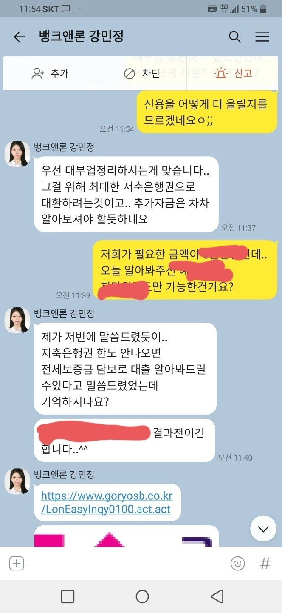
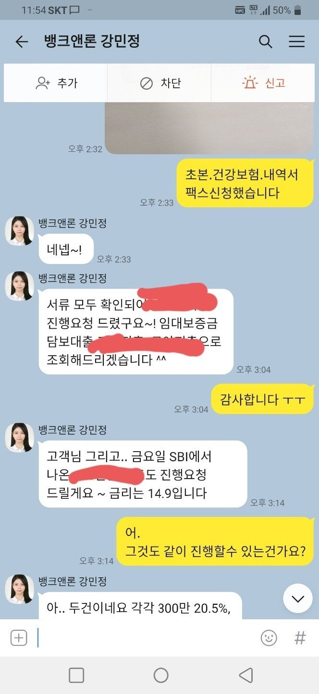
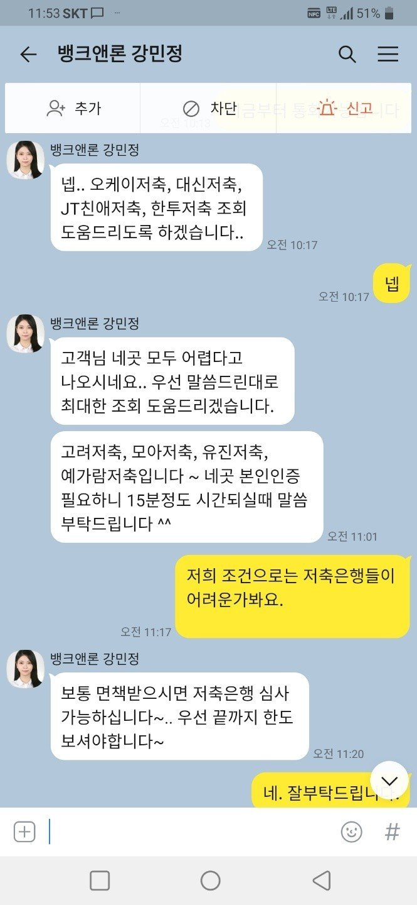

[직장인대출] 개인회생면책자 대출 후기
1.개인회생면책 이력
2.연봉-5.300만
3.건강보험-16만~21만 사이(변동)
4.국민연금-16만
5.직장경력 3년 9개월
6.조이-550만
제니스-250만
에이원-250만
개인회생 면책을 받은지 1년정도가 되었고.
작년 산재사고로 인하여 10개월 정도를 쉬다보니 휴업급여가 나옴에도 생활자금이 부족하여 뱅크앤론을 알아보게 되었습니다.
회생면책이되면 모든 금융거래가 될줄 알앟는데 아니더라구요.
직장거래은행3% 대출이 있음에도.
1금융권 거래는 문턱도 넘어가지 못함에
뱅크앤론을 알아보고 연락드리게되었습니다.
카톡으로 문자하고 강민정 상담사님과 대부업체 상환과 생활자금 및 기타대출(개인적으로 빌린 자금)을 상환하려고 5000만원의 필요자금을 이야기하여 진행하였는데. 대부업체가 발목을 잡는건지 상담사님께서 저축은행 여러곳을 알아봐주시는데 진행이 잘 되지 않아 많이 답답해하던중.
심사가 다른곳에 비해 까다롭다고하는 예가람에서 1천만원 대출이 진행되었고. 다른 저축은행들은 부결이 되어 임대보증금 대출도 가능하시다면서 알아봐주셔서 진행하게 되었습니다.
상담사님과는 연락이 끊긴 상태에서 키움에서 진행하면서 서류담당자시라며 직접오셔서 이것저겋 받아가고 나서도 일주일정도 연락이 없어 처음해보는것이라 이것이 맞는것인지 ...이란 불안감을 안고 일주일은 보냈네요 ㅜㅜ. 일주일이 지나고 나서 키움에서 바로 연락주셔서 입금까지 되고 나서야 안심하였답니다 .
상담사님께서도 연락이 없으신줄 알았는데.
임대보증금 진행이 다되었는지 확인해주시고.
나머지 모자란 금액은 대부상환을 하고 나면
다른곳으로 알아봐주신다고 연락주셨더라고요.
신랑직업상 통화가 힘들어 2주뒤에 쉬는날을 만들어 통화하기로 하였네요
신경써주셔서 감사합니다.
처음 상담할때 상담사님께 광고에 나오는 정부근로자채무통합이란 광고는 믿을만한가요?란 질문부터 시작이었는데....역시나 광고란 대답에 더 조심하고 도움주시는 뱅크앤론에 매번 감사드립니다



https://cafe.naver.com/cityman88/286467